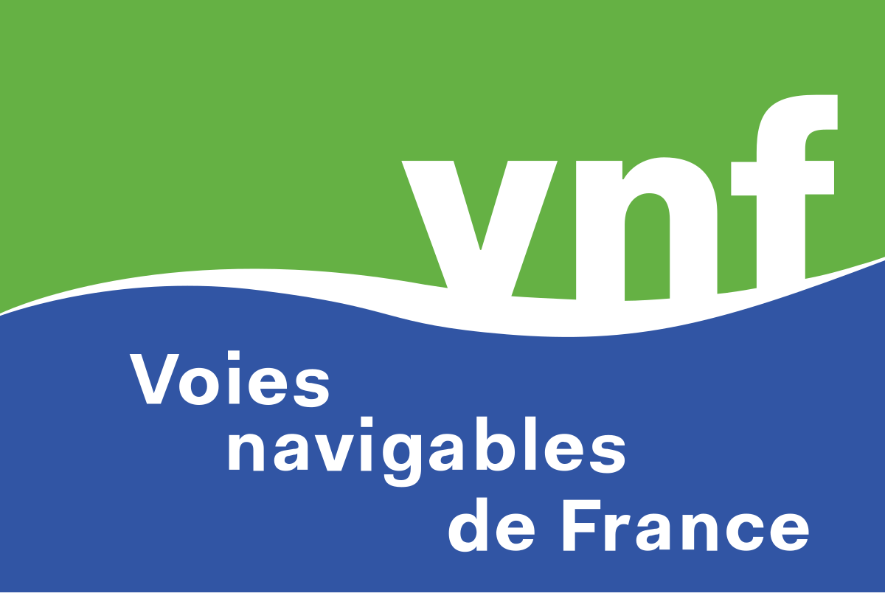

Technicien Helpdesk N1/N2 · Passionné Réseaux & Cybersécurité
Je suis Marius Duyck, étudiant en BTS SIO SISR et technicien helpdesk niveau 1 et 2 chez Econocom, en intervention chez VNF (Voies Navigables de France).
Passionné par l'informatique, les réseaux et la cybersécurité, j'aime comprendre, dépanner et faire en sorte que tout fonctionne — toujours avec rigueur et curiosité.
Depuis 2024, j'effectue mon alternance au sein d'Econocom en tant que technicien helpdesk niveau 1 et 2. L'entreprise est spécialisée dans la transformation numérique des organisations, en combinant services IT, infrastructures et accompagnement sur mesure.
Découvrir Econocom
Dans le cadre de mon alternance chez Econocom, j'interviens chez VNF. Cet établissement public gère, modernise et développe le réseau navigable français (plus de 6 700 km de voies d'eau) et contribue à la transition écologique.
Découvrir VNFAssistance utilisateurs, gestion des incidents, maintenance poste de travail.
Active Directory, DNS/DHCP, gestion des accès et des droits.
Python, PowerShell, HTML/CSS, SQL — automatisation et scripts système.
Support utilisateur, diagnostic et résolution d'incidents, maintenance du matériel et gestion des accès.
Formation en alternance centrée sur les réseaux, la cybersécurité et l'administration système.
Spécialités Mathématiques et HGGSP.
Commissaire de piste, entretien et gestion du matériel, accueil des clients.
Programmation d'un site web et gestion de projets informatiques.
L'évolution des protocoles sans fil (5G et Wi-Fi 6) appliquée à la télémétrie en temps réel en Formule 1.
Lire la veilleWi-Fi haute densité, 5G, VLANs et cybersécurité dans les Smart Stadiums
Lire la veilleEnvie d'échanger sur mes projets ou de collaborer ?